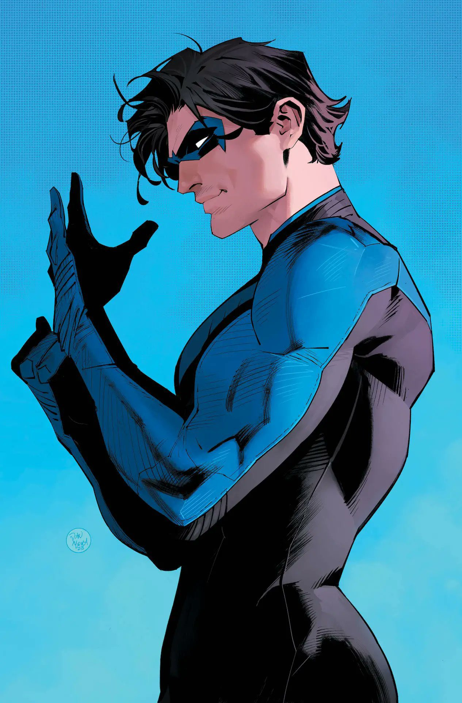
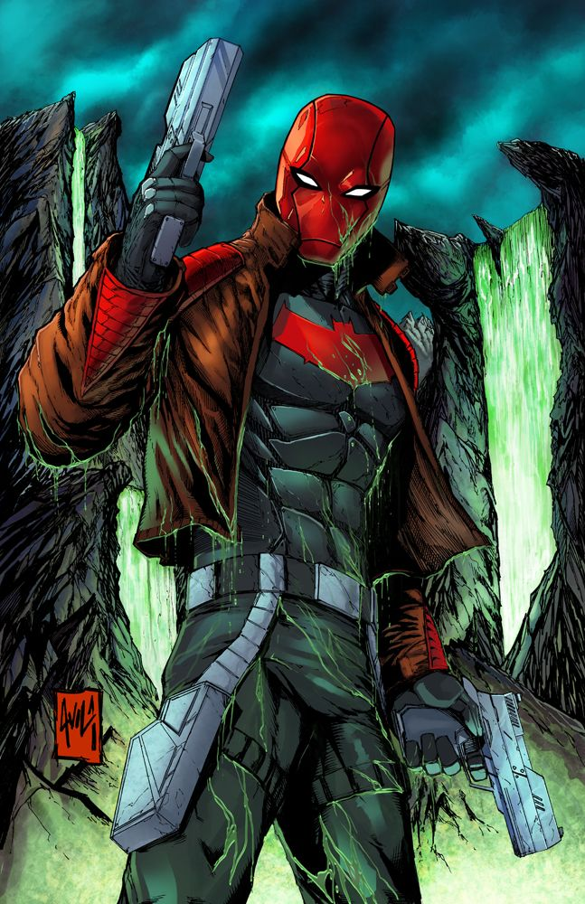
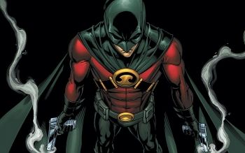
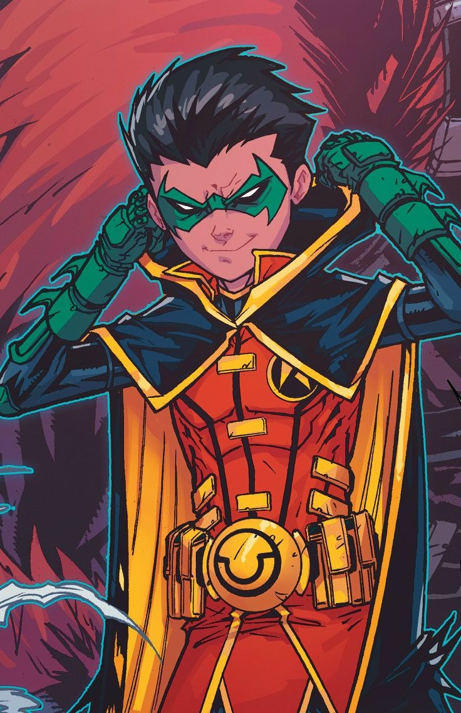

Desde su primera aparición en los cómics en 1940, Robin ha sido el joven compañero de Batman. El primer Robin, hizo su debut en Detective Comics #38 como un acróbata huérfano que fue adoptado por Bruce Wayne. A lo largo de los años, otros personajes han tomado el manto de Robin, cada uno con su propia historia. Robin no solo representa el rol de compañero, sino también el legado de Batman."
Dick Grayson fue el primer Robin, introducido en 1940 como un joven acróbata que perdió a sus padres y fue adoptado por Bruce Wayne. Sirvió como el compañero de Batman durante muchos años, pero eventualmente decidió independizarse y dejó el manto de Robin. En busca de su propia identidad, adoptó el nombre de Nightwing, convirtiéndose en un héroe que protegía la ciudad de Blüdhaven. A lo largo de los años, ha liderado a los Jóvenes Titanes, ha trabajado junto a la Liga de la Justicia, y ha demostrado ser un héroe autónomo tan capaz como Batman.
Jason Todd fue el segundo Robin, introducido en los años 80. Era un joven rebelde que vivía en las calles antes de ser tomado por Batman. Sin embargo, Jason murió trágicamente a manos del Joker en el famoso cómic "A Death in the Family". Años más tarde, Jason fue revivido a través del Pozo de Lázaro, lo que lo dejó con una personalidad más oscura y violenta. Al regresar, adoptó el alias de Red Hood, un antiguo seudónimo usado por el Joker, y comenzó a operar como un antihéroe, usando métodos más letales que los de Batman, aunque eventualmente logró reconciliarse con su pasado y su antiguo mentor.
Tim Drake es el tercer joven en llevar el manto de Robin. Introducido en los 90, Tim es un prodigio que dedujo la identidad secreta de Batman y Robin tras la muerte de Jason Todd. Convencido de que Batman necesitaba un nuevo compañero para mantener su equilibrio, Tim asumió el rol de Robin. A diferencia de sus predecesores, Tim es un detective extremadamente astuto y metódico. Más tarde, decidió crear su propia identidad como Red Robin, permitiéndose operar de manera independiente mientras mantenía una fuerte relación con la Bat-familia.
Damian Wayne es el hijo biológico de Bruce Wayne y Talia al Ghul, presentado como un niño entrenado por la Liga de Asesinos desde muy joven. Criado para ser un guerrero mortal, Damian inicialmente tenía un carácter violento y arrogante. Tras conocer a su padre, Damian asume el manto de Robin y lucha por controlar sus instintos asesinos mientras intenta cumplir con los ideales de Batman. Aunque es el Robin más joven y conflictivo, su relación con Bruce ha evolucionado, y ha demostrado ser un héroe valiente y capaz, a pesar de sus conflictos internos.
